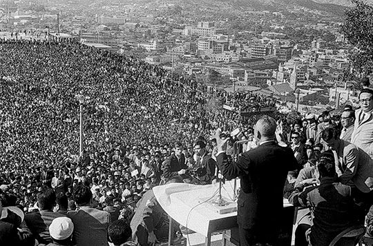
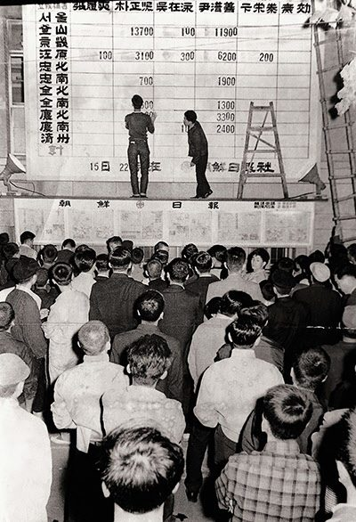
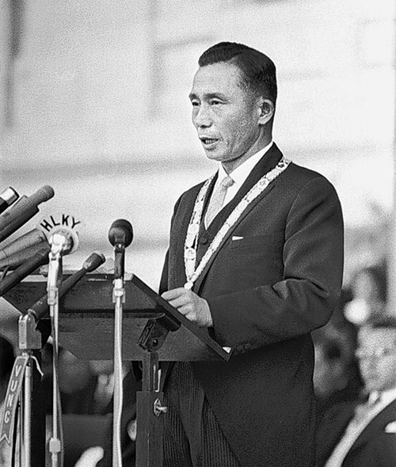
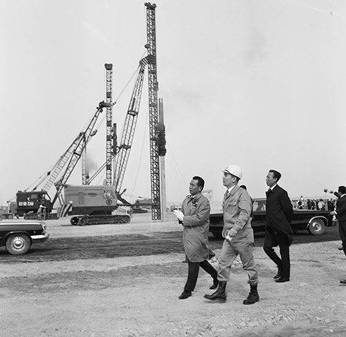

보도일 2014-09-24출처 조선일보 프리미엄조선 연재
1963년 9월 15일 대통령 후보 등록 마감, 법정 선거운동 기간은 한 달, 10월 15일 투표. ‘5‧16의 2년 6개월’에 대해 국민이 심판하는 선거는 예상대로 윤보선 후보와 박정희 후보의 치열한 각축전이었다. 최고회의 개표 상황실에 모여든 최고위원들은 누구나 이길 것이란 표정들이었다. 박태준도 서울이 걱정되긴 해도 이길 것으로 예측했다.
그러나 개표는 출발부터 불안했다. 서울의 집계 소식이 속속 모여들면서 윤보선 후보가 선두로 치고 올랐다. 윤 후보는 꾸준히 앞서나가고 박 후보는 꾸준히 따라붙었다. 부지런한 두 거북이의 경주 같았다. 자정이 지나고 16일 오전 1시가 넘어도 역전의 기미가 없었다. 최고회의 상황실은 침묵에 빠져들었다. 패배의 예감이 덮친 것이었다. 오전 2시가 지나도 박정희 후보는 뒤지고 있었다. 박태준은 마음을 담담히 정리했다.

‘그래, 사심 없이 했다. 부정축재처리위원회 위원으로서 손을 더럽히지 않았고, 최고위원으로서도 최선을 다했다. 새로운 공부와 체험도 많이 했다. 설령 반란이라는 죄목을 달아 법정에 세워도 후회는 없다.’
그런데 여명이 밝아온 무렵이었다. 믿기 어려운 일이 벌어지고 있었다. 박정희의 득표가 슬슬 속력을 더 내는 게 아닌가. 남해안과 서해안의 섬을 출발해 육지에 닿았다는 투표함들이 열리면서 박정희의 득표는 더 속력을 내고 윤보선의 득표는 더 속력이 떨어졌다. 16일 정오가 지났다. 아슬아슬한 박빙의 승부는 역전돼 있었다. 작은 리드지만 대세는 박 후보 쪽으로 기울어진 듯했다. 민정당 윤보선 후보 측이 패배를 자인한 시각은 16일 오후 4시 40분, 그때 박정희 후보는 겨우 5만5000여 표를 앞서고 있었다.
박정희와 윤보선. 끝까지 아슬아슬하게 자웅을 겨룬 두 후보의 득표 상황은 특이하게 나타났다. 박 후보는 영남과 호남에서 압승을, 윤 후보는 서울을 비롯한 충청도와 강원도에서 큰 승리를 거두었다. 최종 차이는 불과 15만6028표. 낙선자는 깨끗한 승복의 표시로 당선자에게 축전을 보냈다.
1963년 대선의 특징은 이른바 ‘정치적 지역감정’이 전혀 나타나지 않은 점이었다. 그해 가을에 만약 소백산맥과 섬진강으로 갈라진 정치적 지역감정이 선거를 좌우했더라면 박정희 후보는 윤보선 후보에게 완패를 당했을 것이다. 전남이 당선자에게 57.2%를 몰아줬듯이, 전라도의 투표 민심에는 ‘반(反)경상도’ 정서가 없었다. 충청도의 투표 민심에 ‘친(親)김종필’ 정서도 없었다.

1963년 가을로부터 꼬박 34년이 더 지난 1997년 가을, 박태준은 대통령 선거에서 김대중 후보와 손을 잡게 된다. 이때 박태준은 “영남과 호남의 화합, 산업화세력과 민주화세력의 화해”를 외친다. 아직은 사회적 반향(反響)이 미미한 시절이었지만, 그는 그해 가을에 최고회의 개표상황실에서 지켜본 그 역전 드라마에 내재되었던 ‘지역감정 없는 투표의 힘’을 선명히 기억하고 있었다.
만약 그가 살아 있어서 올해 국회의원 보궐선거 때 이정현 새누리당 후보가 순천‧곡성에서 당선되는 모습을 보았더라면 기쁜 마음으로 축하주를 내려고 했을 것이다.
1963년 11월 어느 날이었다. 조각을 구상하는 박정희가 박태준을 불렀다. 곧 민선 대통령으로 취임할 박정희, 정통성 시비에서 가까스로 벗어난 통치자. 하지만 박태준에게 박정희는 동백섬을 바라보며 우국충정의 술잔 속에다 거사의 꿈을 담았던 그날들과 다르지 않은 따뜻한 상관이요 스승이었다.
“국회의원이다 정치다 그딴 거는 다 싫다고 했으니 상공장관을 맡아서 도와줘야겠어.”
박정희의 말은 단도직입이었다. 박태준에게는 뜻밖의 강권 같은 제안이었다. 하지만 그는 머뭇거리지 않았다. 역사적인 민정 출범의 새로운 내각을 기웃거리지 말아야 하는 이유를 똑바로 세우고 있었던 것이다.
“각하의 배려에 뭐라고 감사를 드려야할지, 또 저에 대한 변함없는 신뢰를 어떻게 보답해야 할지, 지금 당장은 적합한 말이 떠오르지 않습니다. 오직 각하의 그 마음만은 다시 한 번 저의 마음에도 새기겠습니다.”
“또 거절하는 건가?”
“각하의 뜻에 거역하는 것이 아닙니다. 각하를 도와드리고, 제 자신을 돌보려는 것입니다.”
“무슨 소리야?”
“저는 장관을 맡을 수 없습니다. 이유는 두 가집니다. 첫째, 군복을 벗었다고는 하지만 저와 같은 사람이 장관을 맡게 되면 국민들에게 각하의 민간정부가 군정의 연장이라는 인상을 강하게 심어줄 것입니다. 둘째, 저는 아직 마흔도 안 됐는데, 장관 하다가 물러나면 무엇을 해야 합니까? 설상가상으로 저는 아는 것이 너무 모자라서 더 배워야 합니다. 그러니 이해해 주십시오.”
박정희는 나무랄 말이 떠오르지 않았다.
“다들 일등공신이라며 한자리 달라고 아우성인데, 자네를 본받게 해야겠어. 그래도 내 마음은 자네를 놓고 싶지 않아. 기어이 미국 유학을 갈 거야?”
“새해에 준비되는 대로 떠날 계획입니다.”
“미국 어디로?”
“김웅수 장군이 공부하고 계시는 시애틀 워싱턴대학을 생각하고 있습니다.”
박정희가 고개를 끄덕였다.
김웅수, 훌륭한 장군이지만 박정희에겐 좀 껄끄러운 이름이기도 했다. 6군단장으로서 5‧16에 반대했던 것이다. 박태준은 6‧25전쟁 때 그를 모신 적이 있었고(인사참모 보좌관), 5‧16 성공 후 박정희에게 반대한 장성들을 미국으로 유학 보내자는 건의를 했었다.
박정희의 결심에 따라 5‧16에 반대한 다른 장성들처럼 미국 유학을 떠났던 김웅수는 말년(85세, 2008년)에 “5‧16을 반대했다는 결과로 자의 반 타의 반의 유학이었으나 유학 길에서 경제학 학사와 석사 그리고 박사를 거치는 10년의 제2 인생 준비를 할 수 있는 이득”도 보았다고 회고한다. 박태준은 김웅수와 필생의 교류를 했다.
포항제철 책임자로서 존경하는 선배가 깊이 관여하는 한미(韓美)장학재단으로 적잖은 후원금을 보내주곤 하면서….
박정희의 장충동 공관에서 나와 가을바람이 소슬한 거리를 산책하는 박태준은 비로소 발걸음이 가벼웠다. 텅 비운 마음도 마냥 평안했다. 박정희의 따뜻한 배려와 든든한 신뢰가 따끈한 손바닥처럼 가슴을 쓰다듬어주는 기분이었다.
1963년 12월 17일 오후 2시 서울 중앙청 광장에서 대한민국 제5대 박정희 대통령 취임식이 열렸다. 박정희의 권좌에 크게 결핍되었던 ‘정통성’을 주입하는 행사였다. 박태준에겐 스스로 권좌와 이별하는 행사였다. 제3공화국 출범을 앞둔 12월 12일, 박태준은 국가재건최고회의 상공담당 최고위원 직책을 물러나 소장 진급과 함께 군복을 벗음으로써 ‘권좌와 군인의 신분’을 동시에 벗고 ‘홀가분한 민간인’으로 돌아왔다.
1948년 국방경비대에 입대하면서 벗었던 민간 복장을 15년 만에 다시 입은 그는 대통령 취임식이 열린 즈음에 유학 떠날 준비를 마무리했다.

박태준의 새로운 선택을 도와준 이는 주한 미(美)대사관의 문정관 해리슨이었다. 국무총리 최두선, 부총리 김유택, 외무장관 정일권 등 제3공화국 초대 내각 얼굴들이 신문을 도배한 12월 14일 토요일, 박태준은 유학 준비를 최종 점검하는 용건으로 오전에 해리슨과 만났다. 한국말에도 능숙한 그가 고개부터 갸웃거렸다.
“왜 그래요?”
박태준이 의아하게 물었다.
“오늘 아침에 신문은 보셨나요?”
“봤지요.”
“기분이 묘하지 않아요?”
“무슨 뜻인가요?”
박태준은 짐짓 되물었다.
“장관들의 명단을 보아도 아무렇지도 않아요?”
“그분들이 잘해나가겠지요. 명실상부한 민정이양이 되었으니 이제부터 경제재건의 목표를 완수해 나가야지요.”
“당신은 정말 특이합니다. 군정에 참가했던 사람들은 국회의원이 되겠다, 장관이 되겠다, 또 뭐가 되겠다, 모두 감투를 쓰겠다고 뛰어다니는 판에 당신은 이상한 고집을 피우는군요.”
“새로운 시작을 하는 것도 즐거운 일입니다. 나는 많이 부족해요. 여기부터 더 채워야 합니다.”
박태준이 웃으며 검지로 자신의 머리를 겨누었다.
“왜 하필 미국 유학을 선택했습니까? 어떻게 그런 생각을 하게 되었습니까?”
“미국이 세계를 이끌어가는 시대에 무엇보다 미국을 제대로 알아야 하지 않겠어요? 길게 보면 미래를 위한 준비라고 생각합니다.”
해리슨이 고개를 갸웃거렸다.
“그 뜻은 이해하겠습니다만…. 준비는 차질 없이 됐습니다. 서울 떠날 날짜만 잡으면 됩니다.”
박태준은 새해 1월 중순에서 하순 사이에 유학 보따리를 꾸릴 계획이었다. 아내와 어린 딸들을 서울에 남겨두고 떠난다는 죄책감이 어깨에 얹혔으나 공부에 대한 열망과 미래를 위한 준비를 연기하거나 포기할 수 없었다. 그의 앞길을 막아설 수 있는 사람은 부모도 아내도 아이들도 아니었다. 막 민선 대통령을 시작한 박정희뿐이었다. 그가 박태준을 어떻게 할 것인가?
